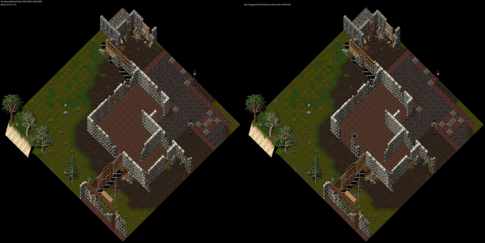
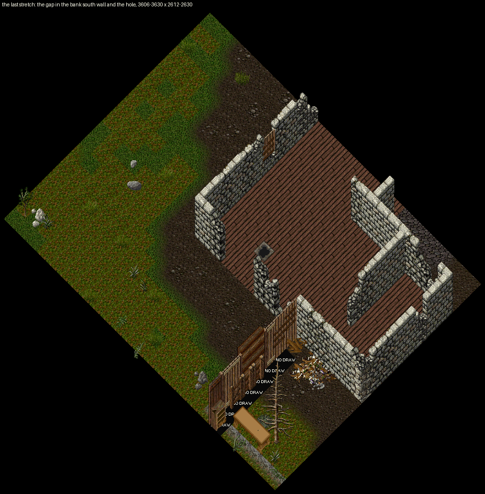
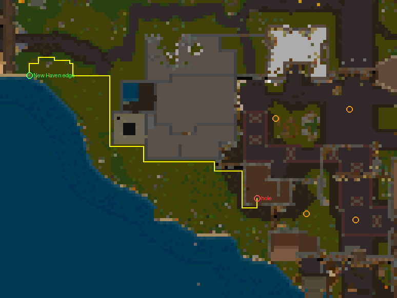
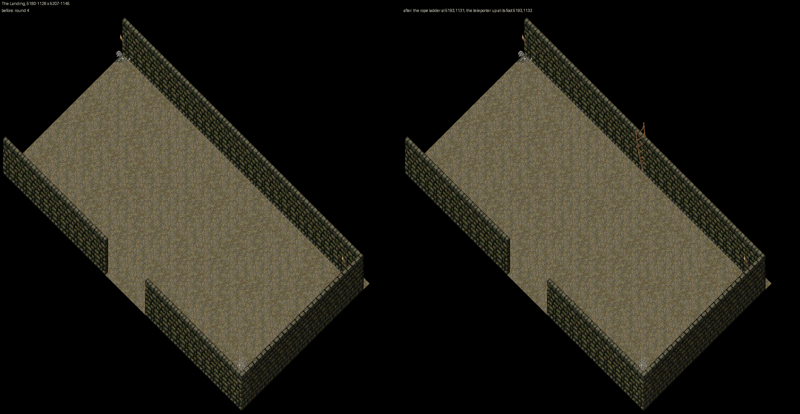

The question: approve the opening in the bank's south wall, the hole and the ladder, or say what to change. Back to the Burrows renders (round 4, approved 2026-10-19).
Before any change the hole sits in a sealed pocket of the ruins: 2614 tiles reachable on foot from the hole, none of them New Haven. The one-tile barriers between that pocket and the New Haven side are 50 wall pieces (listed in the notes). The nearest to the hole are the bank's own south wall (y 2622) and west wall (x 3615).
Reachable from 3545,2579 to the hole, 131 steps. Pinned's undead spawners by the walk:
The Second Bank of Haven before (EA) and after: three ruined-wall pieces gone from the south wall, the hole on the floor (617 KB)

The gap and the hole, close (151 KB)

The walk from New Haven east edge (green) to the hole (red), radar colours, 6 px a tile, pinned undead spawners orange; yellow is the shortest path on foot (15 KB)

The Landing before and after: the rope ladder on the north wall, the way back up (225 KB)
